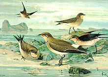
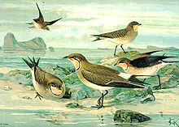

| Black-winged Pratincole | |
|---|---|
|  | |
| Conservation status | |
| Binomial name | |
| Glareola nordmanni Fischer von Waldheim, 1842 |
| Black-winged Pratincole | |
|---|---|
|  | |
| Conservation status | |
| Binomial name | |
| Glareola nordmanni Fischer von Waldheim, 1842 |
The Black-winged Pratincole, Glareola nordmanni, is a wader in the pratincole bird family, Glareolidae.
Their most unusual feature of the pratincoles is that although classed as waders they typically hunt their insect prey on the wing like swallows, although they can also feed on the ground.
Black-winged Pratincole is a bird of open country, and is often seen near water in the evening, hawking for insects. This pratincole is found in warmer parts of south east Europe and south west Asia. Its 2-4 eggs are laid on the ground. It is migratory, wintering in tropical Africa, and is rare north or west of the breeding range.
Black-winged Pratincole is 24–28 cm long, with short legs, long pointed wings and a long forked tail. It has a short bill, which is an adaptation to aerial feeding. The back and head are brown, and the wings are brown with black flight feathers. The belly is white and the underwings are black.
Very good views are needed to distinguish this species from other pratincoles, such as the Collared Pratincole and the Oriental Pratincole which may occur in its range. It is marginally larger than the Collared Pratincole, and is shorter-tailed and longer legged.
Although the dark underwing and lack of a white trailing edge to the wing are diagnostic, these features are not always readily seen in the field, especially as the chestnut underwing of the Collared Pratincole appears black unless excellent views are obtained.
The scientific name of this bird commemorates the Finnish-born zoologist Alexander von Nordmann.
The Black-winged Pratincole is one of the species to which the Agreement on the Conservation of African-Eurasian Migratory Waterbirds (AEWA) applies.

{kind=link}